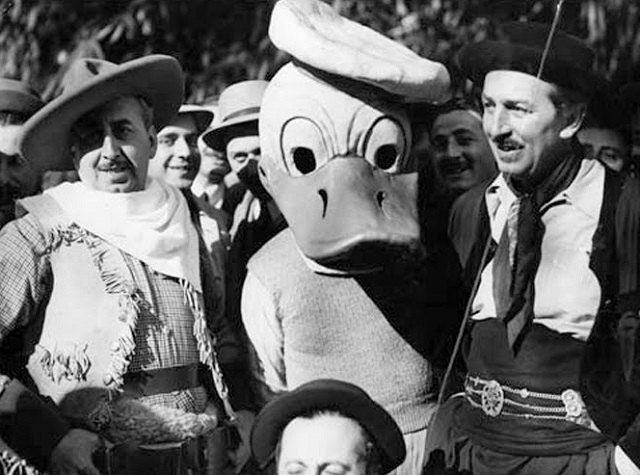

Disney Zitat
"Ich ziehe es vor, Leute mit Spaß zu unterhalten in der Hoffnung, dass sie lernen, statt ihnen etwas beibringen zu wollen in der Hoffnung, dass es ihnen Spaß macht."
- Walt Disney
Stationen und Ereignisse im Leben von Walt Disney
- 1901 - Geburt am 5. Dezember in Chicago, Illinois
- 1932 - Auszeichnung mit dem Ehrenoscar
- 1937 - Disneys "Schneewittchen und die sieben Zwerge" hat Premiere ( Deutschlandfunk Kalenderblatt)
- 1939 - Auszeichnung mit dem Ehrenoscar
- 1942 - Auszeichnung mit dem Ehrenoscar
- 1954 - Der Bau des Disneylands in Anaheim beginnt ( WDR Stichtag)
- 1955 - Walt Disneys erster Vergnügungspark ( Bayern 2 Kalenderblatt)
- 1966 - Tod mit 65 Jahren am 15. Dezember in Burbank, Los Angeles, Kalifornien in den Vereinigten Staaten
- 1971 - Eröffnung von Walt Disney World ( WDR Stichtag)
- 2021 - 120. Jubiläum des Geburtstages am 5. Dezember
- 2026 - 60. Todestag am 15. Dezember
Worte über Walt Disney
"Walt Disney sagte von sich, dass er keine Filme für Kinder, sondern Filme für das Kind in uns allen mache. Als Filmemacher denke ich, dass sie nur Filme für die eigenen Gefühle machen können."
- Andrew Adamson, neuseeländischer Regisseur über Walt Disney